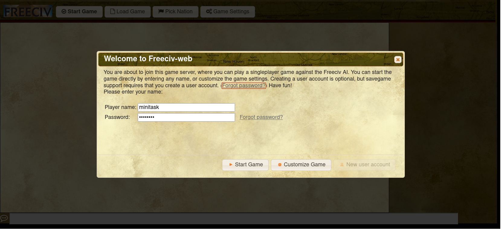
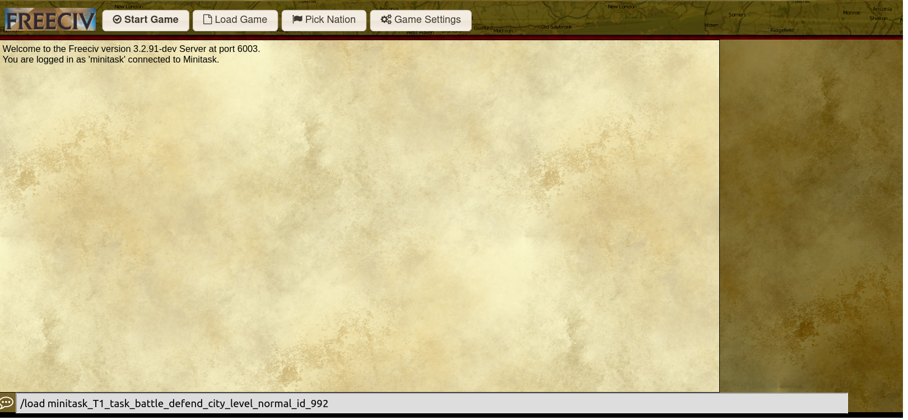
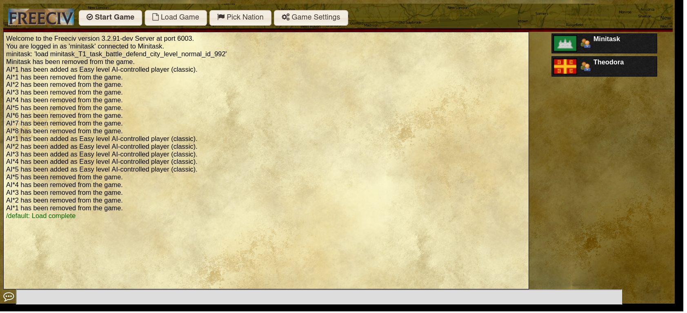

Mini-Game
Due to the multifaceted aspects of a full game, including economic expansion, military development, diplomatic negotiations, cultural construction, and technological research, we have devised mini games to address each component individually. Each mini-game is designed with specific objectives, varying difficulty levels, step-based rewards, and an overall game score. The designed details could be found in the paper.
By the end of this tutorial, you will be able to use API to play the mini-game.
Load Mini-Game by freeciv-web
Prepare Dataset For Freeciv-web version == 1.3
Before you start the mini-game, you need to load the mini-game designed archives into the server’s laoding archive path.
The steps are as follows:
Step 1: find your used version on the releases page, and download the data files for the mini-game to your local path such as /tmp/minigame/
Step 2: copy the data files, and extract them into the corresponding docker savegame path. If the docker image is freeciv-web, and the tomcat version is 10, then execute the following commands:
#!/bin/bash
image="freeciv-web"
tomcat_version="tomcat10"
local_path="/tmp/minigame/"
mkdir $local_path
cd $local_path
docker exec -it $image rm -r /var/lib/$tomcat_version/webapps/data/savegames/minitask/
docker exec -it $image mkdir -p /var/lib/$tomcat_version/webapps/data/savegames/minitask/
for minitask_zip in `ls`
do
docker cp $minitask_zip $image:/var/lib/$tomcat_version/webapps/data/savegames/minitask/
docker exec -it $image unzip -o /var/lib/$tomcat_version/webapps/data/savegames/minitask/$minitask_zip -d /var/lib/$tomcat_version/webapps/data/savegames/minitask/
docker exec -it $image rm /var/lib/$tomcat_version/webapps/data/savegames/minitask/$minitask_zip
done
To load the mini-game sav file MINIGAME_FILE_NAME by the freeciv-web service, follow these steps:
-
Login by the Player name
minitask, and click theCustomize Gamebutton;  -
Enter the command
/load MINIGAME_FILE_NAMEin the input box at the bottom;  -
Click the
Start Gamebutton to start the mini-game. 
Initialize Random Mini-Game
civrealm/FreecivMinitask-v0 is the environment of mini-game. When the mini game is launched, its internal design will randomly select a game of any type and any difficulty.
from civrealm.agents import ControllerAgent
import gymnasium
env = gymnasium.make('civrealm/FreecivMinitask-v0')
agent = ControllerAgent()
observations, info = env.reset()
Choose Specific Mini-Game
Inside reset method of environment, you can use the parameter minitask_pattern to choose specific mini-game. The fields are as follows:
type: the type of mini-game, see the available options MinitaskType
level: the difficulty of mini-game, see the available options MinitaskDifficulty
id: the id of mini-game, the available range is 0 to MAX_ID
For example, if you want to set the type as development_build_city and the difficulty as easy, then the code is as follows:
from civrealm.agents import ControllerAgent
import gymnasium
env = gymnasium.make("civrealm/FreecivMinitask-v0")
observations, info = env.reset(minitask_pattern={
"type": "development_build_city",
"level": "easy"})
Definition of Mini-game messages
The messages of mini-game are passed from the server to the agent at each trigger point by lua script setting. The general json structure of message is:
{
"task": "minitask",
"name": "${name of minitask}",
"status": ${MinitaskGameStatus},
"turn": ${turn of game},
"metrics": [{
"mini_score": ${mini_score},
"mini_goal": ${mini_goal},
"max_turn": ${max_turn},
"is_mini_success": ${MinitaskPlayerStatus},
}]
}
-
The
taskis used to label the source of message. Thetaskfor messages from mini-game is set to beminitask. -
The final element of
metricsrecords the final game review status for each trigger action, which is actually used in civrealm. In the dict structure ofmetricselements, we can define other useful auxiliary information -
The
metrics.mini_scoreis used to record the agent's mini-game score. -
The
metrics.mini_goalis used to record the agent's mini-game goal, which is to set the game victory score threshold. -
The
metrics.max_turnis limited to a certain number of turns. If the maximum number of turns is exceeded, failure is returned in civrealm. -
The
metrics.is_mini_successis used to record the player succeed status of player, which is the same assuccessdefined of minitask info in civrealm. If succeed, it requires thatmini_score>=mini_goal.
Play mini-game as a random agent
Generally speaking, it is difficult for random agents to win the battle and diplomacy mini-game, and in the development mini-game, the game victory condition will be met with a certain probability.
The commands are as follows:
After executing the commands, the log will be like:
Success
Step: 0, Turn: 1, Reward: 0.0, Terminated: False, Truncated: False, Action: ('tech', 'cur_player', 'set_tech_goal_Conscription_18')
Minitask Info: {'status': 0, 'success': -1, 'human_cnt': 11.0, 'ai_cnt': 12.0, 'mini_score': -1.0, 'mini_goal': 11.0, 'max_turn': 50, 'human_leader_alive': 1, 'ai_leader_alive': 1, 'is_mini_success': -1}
Step: 1, Turn: 1, Reward: 0.0, Terminated: False, Truncated: False, Action: ('unit', 108, 'goto_1')
Minitask Info: {'status': 0, 'success': -1, 'human_cnt': 11.0, 'ai_cnt': 12.0, 'mini_score': -1.0, 'mini_goal': 11.0, 'max_turn': 50, 'human_leader_alive': 1, 'ai_leader_alive': 1, 'is_mini_success': -1}
In the log, We can see that each step displays some fields from the above definitions as Definition of Mini-game messages, and some are auxiliary fields designed by mini-game itself such as human_leader_alive.
Play mini-game as a AI-assistant agent
Warning
The AI-assistant agent only supports development_build_city.
To engage in a dialogue with the rule-based AI assistant integrated within the freeciv server, please configure the following command:
The comprehensive script for invoking the AI assistant within the minigame setting is outlined below:
import time
from civrealm.freeciv.utils.freeciv_logging import fc_logger
from civrealm.envs.freeciv_wrapper import LLMWrapper
from civrealm.configs import fc_args
from civrealm.freeciv.utils.port_utils import Ports
import civrealm
import gymnasium
# enabled AI-assistant
fc_args['advisor'] = 'enabled'
def main():
env = gymnasium.make('civrealm/FreecivMinitask-v0', client_port=Ports.get())
step = 0
observations, info = env.reset(minitask_pattern={
"type": [
"development_build_city"]
})
done = False
while not done:
try:
# get AI-assistant action
action = env.civ_controller.get_assistant_action()
fc_logger.info(f"Prepare to act: {action}")
# env step
observations, reward, terminated, truncated, info = env.step(action)
print(
f'Step: {step}, Turn: {info["turn"]}, Reward: {reward}, Terminated: {terminated}, '
f'Truncated: {truncated}, action: {action}')
step += 1
done = terminated or truncated
except Exception as e:
fc_logger.error(repr(e))
raise e
env.close()
if __name__ == '__main__':
main()